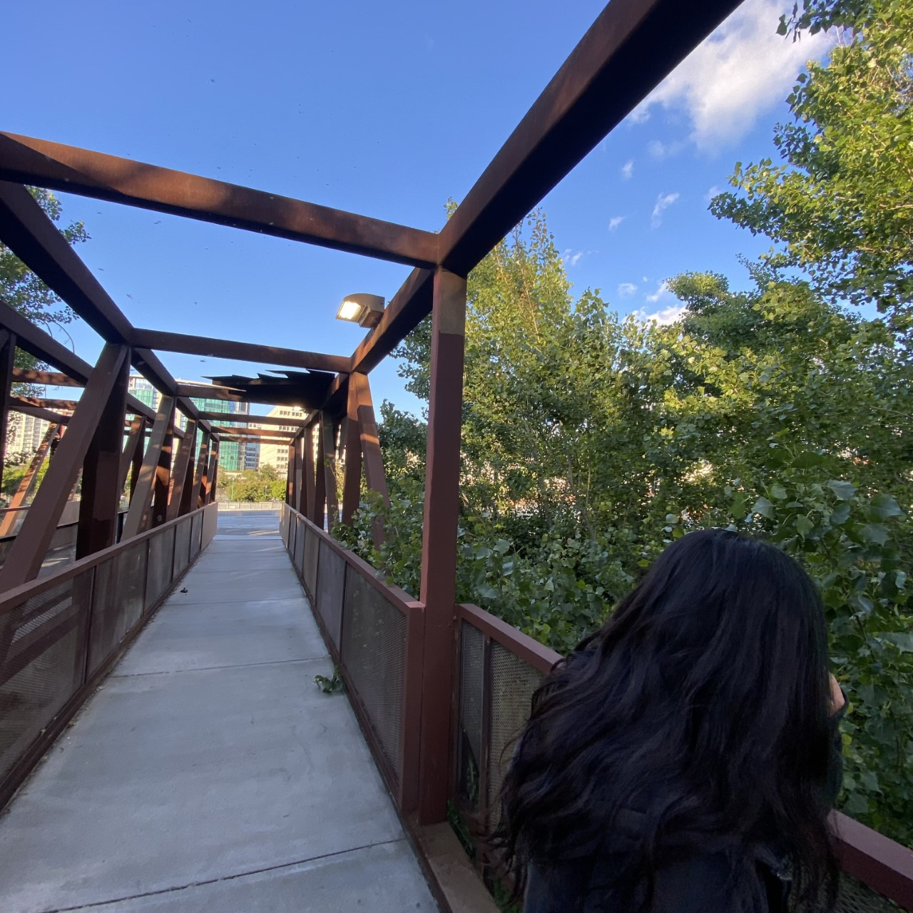

An East Bay artist
Hello, I'm Marquan Russell and I am a Bay Area based artist that does a lot of photography mostly in the Bay Area. I was born here in Berkeley, California but lived in Richmond, California for most of the time. I then moved to Fresno where I started fresh in a new town and wanted to have some fun, so my sisters started making YouTube videos out of boredom which got me doing it myself. My sisters are the main people who really got me into film and photography as a kid since that's all they did when we were younger so I was able to adapt to the medium pretty quickly and created some coo videos that no longer exist since I gave that up. As I got into high school I started to develop more of my artist skills like, Drawing, Photography, Papermashe, etc. but what I really had a passion for was Photography and I just knew it was gonna be my favorite in the future.
Here are some of my works as a photographer, not much but you can really tell that I have a type of style of how I take my photos. I Really like taking my photos from zoomed out distances giving it that 2000's music video look. I am also into taking street wear photos, I find this as an addition of being an artist. Fashion its-self is art and can tell so much about a person or story, so by combining the two to my work has pushed me to explore more options in art because I might find something else to work on as well I just would have to keep looking.